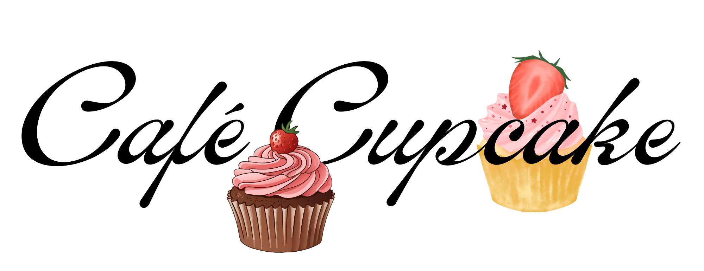
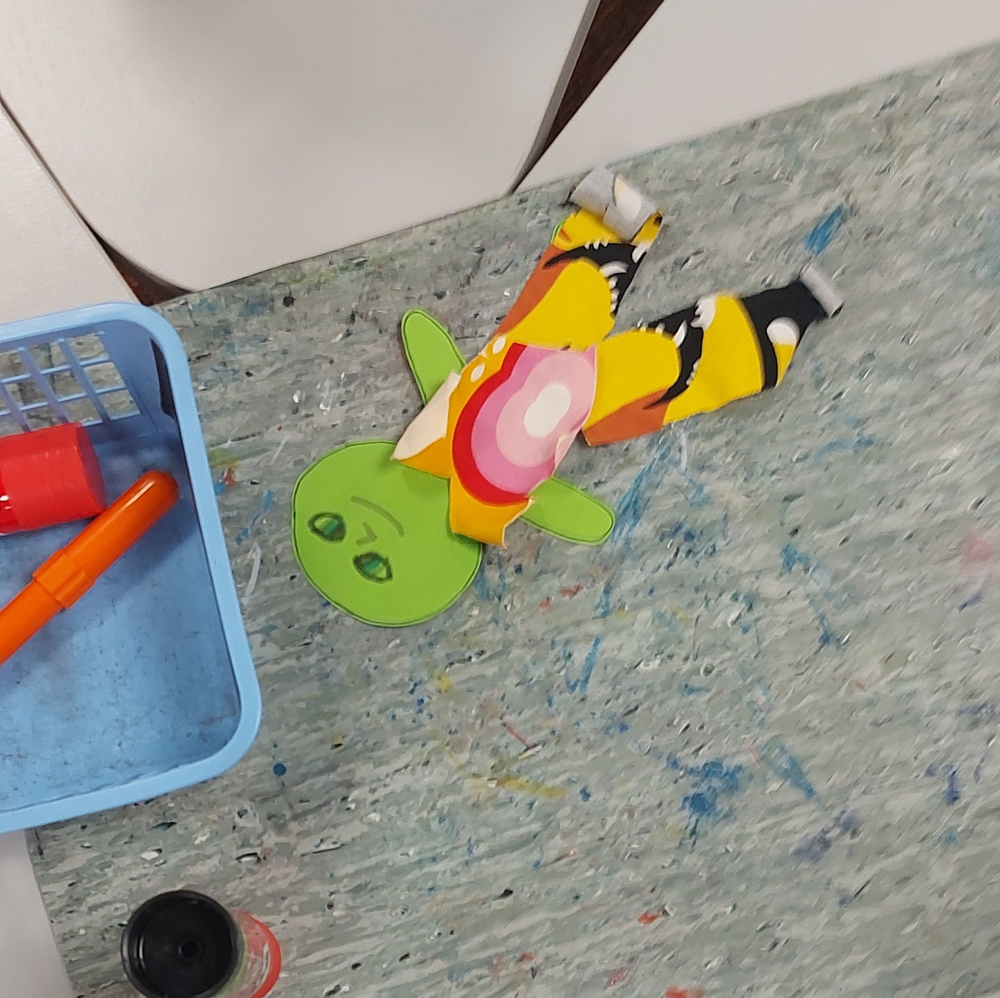
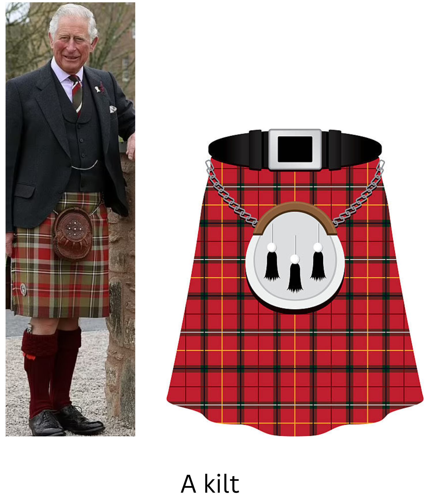
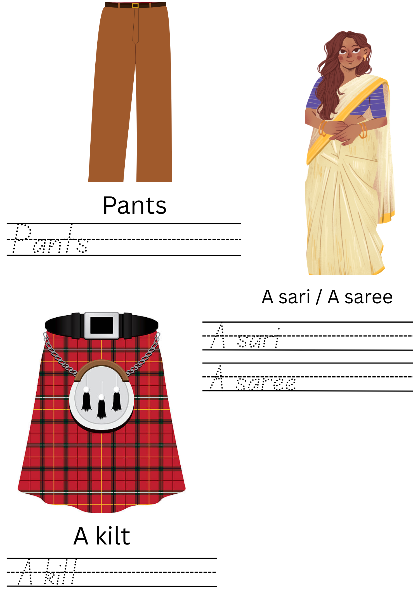

Näyteportfolio
Olen suunnitellut opetusmateriaaleja sekä opintojaksoilla että kurssien ja harjoitteluiden ulkopuolella.
Suunnittelin monikieliset pelikortit, joilla voisi pelata Hullunkuriset perheet -korttipeliä (eng. Go fish). Idean sain Kielten ja kulttuurien kohtaaminen kieltenopetuksessa -opintojaksolta, jossa yksi ryhmä esitti, että korttien avulla voitaisiin opiskella jotakin kielen osa-aluetta. Versiossani harjoiteltaisiin ruokasanoja, mutta kortteihin voisi myös vaihtaa vaikkapa eläimet.

Syventävän harjoittelun rinnakkaiskurssilla ryhmätyönä suunnittelimme Storyline-kokonaisuutta. Materiaali ei ole vielä täysin valmis, koska tarkemmat tehtävät ja tuntisuunnitelmat puuttuvat. Tunneilla oppilaiden tulee emokenguruna auttaa muita Australian eläimiä saadakseen apua kadonneen pentunsa etsintään. Eläimistä kootaan kenguruille uusi 'chosen family', jotka muuttavat asumaan yhteen Kengurusaarelle.


Suunnittelin ja toteutin yhteisopettajuutena toiminnallisen oppitunnin ekaluokkalaisille. Tunnilla kerrattiin aikaisemmilla tunneilla harjoiteltuja vaate- ja ruokasanoja sekä joitain fraaseja (How much, Can I have ..., please). Tunnilla oli kolme pistettä: yhdellä oppilaat tekivät itsenäisesti Wordwall-tehtäviä. Toisella oppilaat kävivät kahvilassa, jossa he ostivat erilaisia ruokia ja juomia. Kolmas piste oli vaatekauppa, jossa ostettiin alienille (vihreä paperinukke) vaatteita sekä liimata ne alienille päälle. Alla kuvia vaatekauppapisteeltä.




Pidin 1.luokalle myös muuta toiminnallista pitämilläni oppitunneilla. Kun kertasimme ruoka- ja vaatesanastoa, oppilaiden piti liikkua luokassa sen kuvan luo, joka vastasi sanomaani. Kuviskuvana alla yksi käyttämistäni julisteista sekä kirjoitustehtävä tunnilta, missä harjoiteltiin kirjoittamista. Vaatesanastoon lisäsin kulttuurin opetusta kiltin ja saree-makon avulla.


Portfolion etusivu